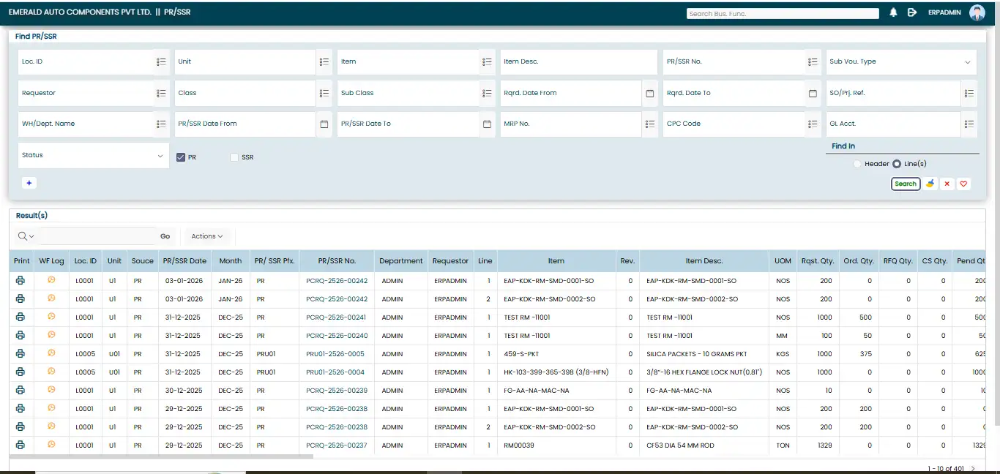
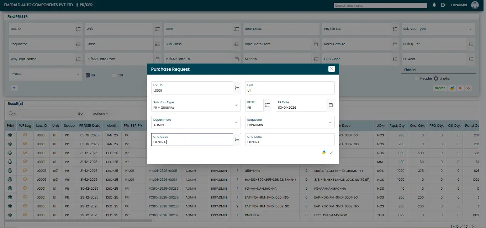
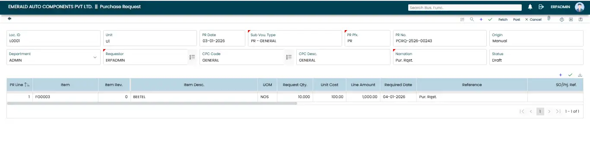
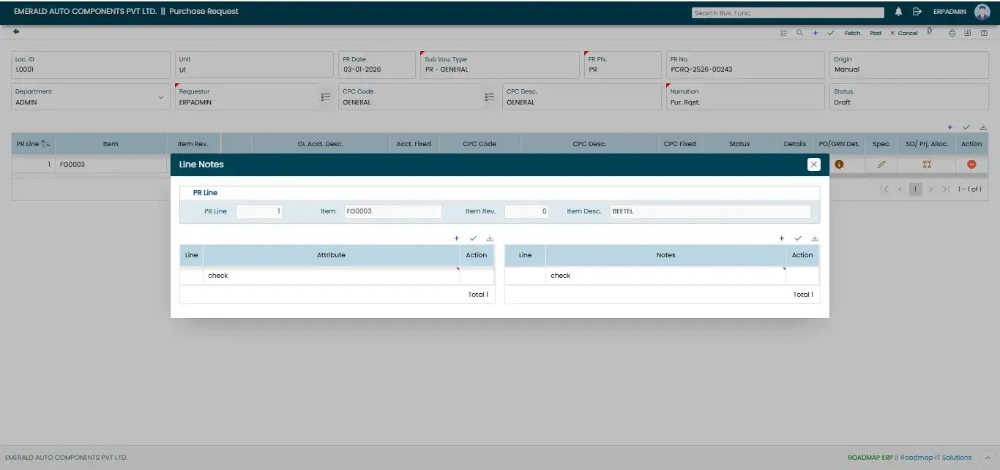

<div data-category="Purchase Order" data-title="Purchase Request" data-updated="December 01, 2025" data-contributors="RoadmapIT" data-breadcrumb="Home,Purchase Order,Purchase Request">
  <div class="page-content">
    <p>Purchase Request initiates the procurement process by documenting the need for goods or services within an organization. It serves as a formal request from a department or individual to the purchasing department, specifying details such as quantity, description, and timeline for delivery.</p>

    <h5>Pre- Requisites:</h5>
    <p>Items required by the user are sent as a Purchase request by selecting the items which are configured earlier.</p>

    <h5>Navigation path:</h5>
    <p class="fs-6">Supply Chain \ Purchasing \ Transaction \ Purchase Request</p>

    

    <ul style="list-style-type: none; align-content: center">
      <li class="mouse-icon">Search screen displays the list of Purchase Request with the relevant details and its status.</li>
      <li class="mouse-icon">Click on search to filter all the records.</li>
      <li class="mouse-icon">User can filter the respective documents by entering the search parameters at the header.</li>
      <li class="mouse-icon">Using search, system displays the results relevant to the search parameters entered.</li>
      <li class="mouse-icon">On clicking; the corresponding transaction record will be displayed.</li>
      <li class="mouse-icon">Using <i class="bi bi-eraser text-secondary"></i> icon, entered search parameters can be cleared.</li>
      <li class="mouse-icon">To close the screen, use <i class="bi bi-x-lg text-danger"></i> icon.</li>
      <li class="mouse-icon">
        By Clicking the
        <i class="bi bi-plus fs-4 mx-2 text-primary"></i>
        Add button we can create new Purchase Request by entering all the mandatory fields displayed in the Add dialog.
      </li>
    </ul>

    

    <ul style="list-style-type: none; align-content: center">
      <li class="mouse-icon">Enter/Select the Unit location.</li>
      <li class="mouse-icon">Select the Requestor from LOV.</li>
      <li class="mouse-icon">Enter/Select CPC Code.</li>
      <li class="mouse-icon">
        Click on
        <i class="bi bi-check-lg fs-4 mx-1 text-success"></i>
        button to create the Purchase request.
      </li>
    </ul>

    

    <ul style="list-style-type: none; align-content: center">
      <li class="mouse-icon">Select the Item from the LOV.</li>
      <li class="mouse-icon">Enter the Request Quantity.</li>
    </ul>

    <h2>Purchase Request Notes</h2>
    <p>This screen is used to enter the Notes for the Purchase Request.</p>

    

    <ul style="list-style-type: none; align-content: center">
      <li class="mouse-icon">Enter the Notes and Save the details.</li>
    </ul>
  </div>
</div>
